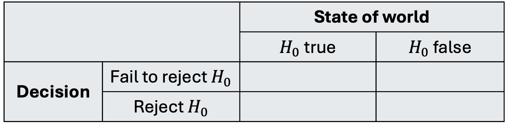
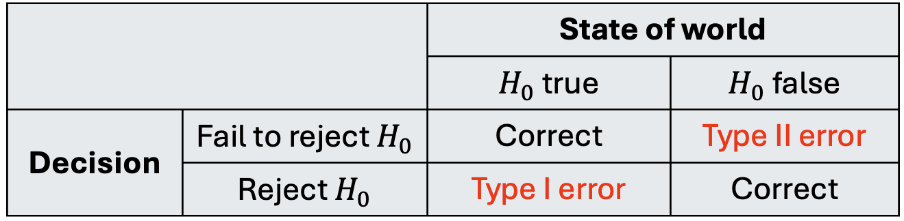

Introduction to Hypothesis Testing
Housekeeping
- Office hours change this week
- Mid-semester feedback survey results
Testing
We are now entering into second branch of inference-related tasks: testing.
We have some “claim”/question about the target population, and we use sampled data to provide evidence for or against the claim/question.
Especially important in experiments where we want to learn the effect of some new drug
We will use the hypothesis testing framework to formalize the process of making decisions about research claims.
Because claim is about target population, we will almost always formulate claims in terms of population parameters
Then we use sample statistics to provide the evidence for/against
Step 1: Define hypotheses
A hypothesis test is a statistical technique used to evaluate competing claims using data
We define hypotheses to translate our research question/claim into statistical notation
We always define two hypotheses in context: a null hypothesis and an alternative hypothesis
Null hypothesis \(H_{0}\): the hypothesis that represents “business as usual”/status quo/nothing unusual or noteworthy
Alternative hypothesis \(H_{A}\): claim the researchers want to demonstrate
It will not always be obvious what \(H_{0}\) should be, but you will develop intuition for this over time!
Defining hypotheses in context
Research question: do the majority of STAT 201A/STAT 201B students get at least 7 hours of sleep?
- Define \(p\) as the true proportion of STAT 201A/STAT 201B who get at least 7 hours of sleep on average
\(H_{0}\): \(p \leq 0.5\)
\(H_{A}\): \(p > 0.5\)
Step 2: Collect and summarize data
Suppose I collect a sample of \(n= 10\) students from each class:
In STAT 201A sample: 6 students received at least 7 hours of sleep, and 4 received less than 7 hours
- Sample statistic: \(\hat{p}\): 0.6
In STAT 201B sample: 7 students received at least 7 hours of sleep, and 3 received less than 7 hours
- Sample statistic: \(\hat{p}\): 0.7
Are we prepared to answer our research question based on this evidence?
- Due to variability in data and \(\hat{p}\) we should ask: do the data provide convincing evidence that the majority of students get at least 7 hours of sleep?
Step 3: Determine if we have “convincing evidence”
“Convincing evidence” for us means that it would be highly unlikely to observe the data we did (or data even more extreme) if \(H_{0}\) were true!
We will calculate a p-value: the probability of observing data as or more extreme than we did assuming \(H_{0}\) true
- Note: p is not the same as true proportion \(p\)!
Highly unlikely is vague and needs to defined by the researcher, ideally before seeing data.
If we want to answer the research question with a binary yes/no, we need some threshold to compare the p-value to. This is called a significance level \(\alpha\)
Common choices are \(\alpha = 0.05\), \(\alpha = 0.01\) (more on this later)!
For our example, we will choose \(\alpha = 0.05\)
How to obtain p-value?
How to obtain this probability? It depends!
Option 1: if we have assumptions about how our data behave, we can obtain this probability using theory/math (next week)
Option 2: if we don’t want to make assumptions, why not simulate?
- We will call this option “simulating under \(H_{0}\)”
This is the step that requires the most “work”, and what exactly you do will depend on the the type of data and the research question/claim you have
Remark: hypothesis tests, like confidence intervals, are not unique!
Simulating under \(H_{0}\) (step 3 cont.)
We have to simulate our data under the assumption that \(H_{0}\) is true (recall \(H_0\): \(p \leq 0.5\))
Imagine a big bag with pink and purple slips of paper
Pink = people who got at least 7 hours of sleep
Purple = people who got less than 7 hours
What proportion of the slips in the bowl should be pink vs purple?
To simulate under \(H_{0}\), no more than 50% of the slip should be pink
- We want convincing evidence even in the most “borderline” case, so we will choose 50% of the slips to be pink.
Simulating under \(H_{0}\) (step 3 cont.)
Activity: we now replicate our original sample, this time sampling from this bag of paper slips
We repeatedly take samples from the null distribution, using original sample size \(n =\) 10
For each sample, calculate the simulated proportion of pink slips, \(\hat{p}_{sim}\)
Live code?
set.seed(2) # reproducibility
B <- 5000 # number of simulations to do to gather enough evidence
n <- 10 # size of our original sample
p_null_vec <- rep(NA, B) # vector to store the simulated proportions
for(b in 1:B){
# sample() takes a random sample
null_samp <- sample(x = c("pink", "purple"), # pink and purple slips
size = n, # sample of size n
replace = T, # tell R that my bowl has infinitely many marbles
prob = c(0.5, 0.5)) # 50% of slips are pink and 50% are purple
# calculate and store the proportion of pink slips in this simulation
p_null_vec[b] <- sum(null_samp == "pink")/n
}Null distribution of statistic
We can visualize the distribution of \(\hat{p}_{sim}\) assuming \(H_{0}\) true:
This is called the null distribution of the sample statistic, which is the distribution of the statistic assuming \(H_{0}\) is true
Where is the null distribution of \(\hat{p}\) centered? Why does that “make sense”?
Comparing null to observed
Let’s return to our original goal of Step 3! We need to find the p-value: the probability of observing data as or more extreme as ours, assuming \(H_{0}\) were true.
Our observed data were \(\hat{p} =\) 0.6 (STAT 201A) or \(\hat{p} =\) 0.7 (STAT 201B)
\(H_{0}\): \(p \leq 0.5\) and \(H_{A}\): \(p > 0.5\)
What does “as or more extreme” mean in this context?
How can we use the null distribution to obtain this probability?
Obtain p-value (step 3 cont.)
We can directly obtain (technically estimate) the p-value using our null distribution and our observed \(\hat{p}\)!
- Out of 5000 replications, we saw 1946 instances of \(\hat{p}_{sim} \geq \hat{p}\)
- p-value is \(\frac{ 1946}{5000} \approx\) 0.39
- Out of 5000 replications, we saw 853 instances of \(\hat{p}_{sim} \geq \hat{p}\)
- p-value is \(\frac{ 853}{5000} \approx\) 0.17
Step 4: Interpret p-value and make decision
Interpret the p-value in context
Assuming \(H_{0}\) true, the probability of observing a sample proportion as or more extreme as ours (0.6 or 0.7) is 0.39 or 0.17
Make a decision about research claim/question by comparing p-value to significance level \(\alpha\)
If p-value \(< \alpha\), we reject \(H_{0}\) (it was highly unlikely to observe our data given our selected threshold)
If p-value \(\geq \alpha\), we fail to reject \(H_{0}\) (we did not have enough evidence against the null)
Note: we never “accept \(H_{A}\)”!
Since our p value is greater than \(\alpha = 0.05\), we fail to reject \(H_{0}\). The data do not provide sufficient evidence to suggest that the majority of STAT 201A/STAT 201B students get more than 7 hours of sleep.
Summary of testing framework
Four steps for hypothesis test:
- Define null and alternative hypotheses \(H_{0}\) and \(H_{A}\) in context
- Collect data and set significance level \(\alpha\)
- Obtain/estimate p-value by modeling randomness that would occur if the \(H_{0}\) were true
- We did this using by simulating under the null distribution
- Interpret p-value and make a decision in context
Errors in decision
In Step 4, we make a decision but it could be wrong! (Unfortunately, we will never know)
We always fall into one of the following four scenarios:

Identify which cells are good scenarios, and which are bad
Errors in decision

What kind of error could we have made in our example?
It is important to weight the consequences of making each type of error!
- We have some control in this - how? Through \(\alpha\)!
Comprehension questions
What are the similarities/differences between the bootstrap distribution of a sample statistic and the simulated null distribution?
Do you understand what a p-value represents, and how we obtain it from the null distribution?
What role does \(\alpha\) play? Why is it important to set \(\alpha\) early on?